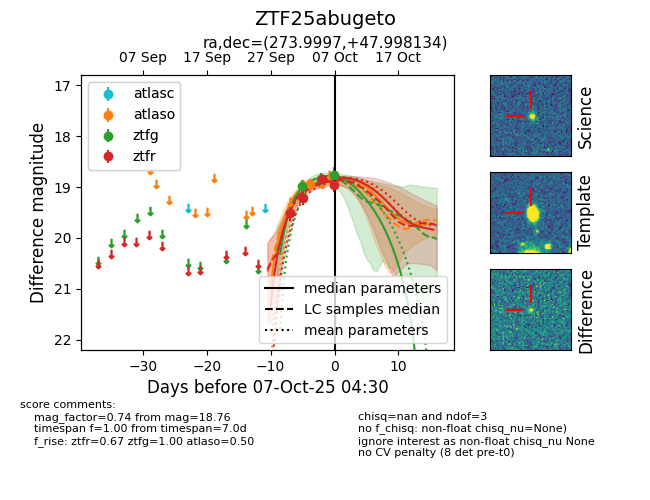
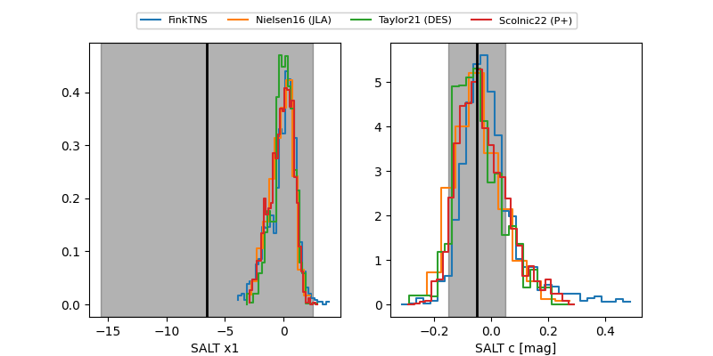

FINK: ZTF25abugeto
Lasair: ZTF25abugeto
ALeRCE: ZTF25abugeto
ZTF25abugeto (ztf,fink)
equatorial (ra, dec) = (273.9997,+47.99813)
galactic (l, b) = (75.8309,+25.50409)


last atlaso=18.93, ztfg=18.76, ztfr=18.97
1 atlaso, 3 ztfg, 4 ztfr detections